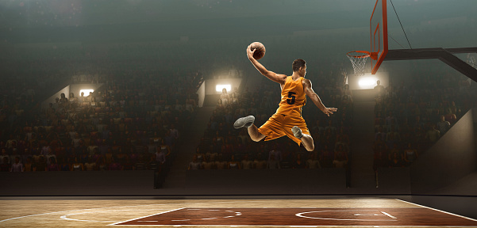

O futebol, esporte que é considerado a paixão nacional e, sem dúvidas, o mais popular do mundo, começou a ser praticado na Inglaterra, no século XVII. À época, o esporte não tinha o formato que tem hoje e tampouco era chamado de “futebol”. Isso só aconteceu décadas depois, com a criação das regras. Hoje o futebol movimenta um mercado financeiro bilionário, proporciona eventos globais, transforma atletas de todas as origens em ídolos internacionais e utiliza da mais alta tecnologia em transmissões e equipamentos esportivos. No entanto, a história do futebol não começou assim. O esporte trilhou uma longa jornada, sem nenhum tipo de glamour e com poucos holofotes, até chegar a esse patamar.
Não se sabe com precisão a data em que o futebol surgiu. Historiadores contam que os ingleses adquiriram o hábito de chutar uma bola de couro, símbolo da cabeça de um membro do exército da Dinamarca, como forma de comemorar a expulsão dos dinamarqueses de seu país ainda no século X. A ação era realizada anualmente, mas, com o tempo, a prática passou a popularizar-se, e os jogos com a bola passaram a ser realizados com maior frequência. Os jogos não tinham regras estabelecidas, e era permitido diversos tipos de agressões para avançar ou conter o adversário, o que acabava ferindo muitos dos praticantes. Com as consequências, o Rei Eduardo II decidiu proibir os jogos, temendo a perda dos soldados do seu exército. A prática foi proibida, mas não cessada e, apenas em 1681, os jogos com a bola voltaram a ser permitidos na Inglaterra.
Basquete
O jogo foi criado em 1891 por James Naismith, um professor de Educação Física canadense que trabalhava em Massachusetts, nos Estados Unidos. Por causa do frio intenso na época de inverno, esportes como baseball e futebol, praticados ao ar livre, ficavam menos populares nas estações mais geladas do ano – daí a necessidade de criar um esporte que pudesse ser praticado em uma quadra fechada. A primeira bola usada para o basquete era muito parecida com a bola de futebol, e o jogo só foi ganhar sua bola própria, projetada para ser arremessada e bater contra o chão de forma rápida e bruta, em 1894. O jogo também foi pensado como uma alternativa menos violenta de esporte, ao contrário do futebol americano, que tem muitas colisões corporais. Como bom professor de atividades físicas, Naismith também buscava um esporte que fosse interessante para seus alunos e que, além disso, estimulasse o senso de trabalho em equipe.
As mulheres começaram a jogar basquete graças à professora Sensa Berenson, em 1892, ano do primeiro jogo oficial de basquete masculino, que levou cerca de 200 pessoas para as arquibancadas. O primeiro jogo oficial feminino, no entanto, foi apenas em 1896 – foi também neste ano que o jogo chegou ao Brasil graças ao norte-americano Augusto Louis. Ainda que tenha ficado popular em mais países, o jogo só se tornou olímpico em 1936, quando fez parte dos Jogos Olímpicos de Berlim. A partir deste momento, a modalidade esportiva ganhou popularidade em todo o mundo e se mantém como uma das mais praticadas – mais de 200 países são filiados à Federação Internacional de Basquetebol (FIBA), órgão responsável por gerenciar eventos internacionais de basquete, com sede em Genebra, Suíça.
Tênis
jogo atual de tênis originou-se no século XIX, na Inglaterra. Muitos historiadores, porém, acreditam que a origem do esporte data do século XII, na França, onde contudo usava-se a mão para bater na bola. No final do século XVI começou-se a usar raquetes para bater na bola e o jogo passou a ser chamado de “tênis”, do francês antigo Tenez, que pode ser traduzido como “segure” ou “receba”. O jogo era popular na França e na Inglaterra, onde era praticado em locais cobertos, onde a bola batesse em uma parede. Mais tarde, o jogo seria chamado de “tênis real”. O torneio mais antigo de tênis no mundo, o Torneio de Wimbledon, foi realizado pela primeira vez em Londres em 1877. Essa primeira edição gerou um debate sobre a padronização das regras do esporte.
Em 21 de Maio de 1881, a United States National Lawn Tennis Association foi fundada para padronizar as regras e organizar as competições. O U.S. National Men’s Singles Championship, hoje o US Open de tênis, foi realizado pela primeira vez em 1881, em Newport, Rhode Island. O torneio feminino se estabeleceu em 1887. O esporte também era popular na França, com o Aberto da França datando de 1891. Assim, Wimbledon, o US Open, o Aberto da França e o Aberto da Austrália (de 1905) tornaram-se os eventos de maior prestígio no tênis, algo que se mantém até hoje. Juntos, esses torneios são chamados de Majors ou Slams (termo retirado do basebol)..